Diagnóstico e Ciência do Meio
Como interpretar dados de solo e água subterrânea para localizar a contaminação, entender seu comportamento no subsolo e avaliar quem está exposto.
Em três dias de palestras online, especialistas discutem como usar dados de solo e água e inteligência artificial para identificar a contaminação, avaliar quem está em risco e escolher como recuperar a área.
Como investigar uma área contaminada, escolher uma intervenção e decidir seu uso futuro?
A segunda edição reúne consultores, pesquisadores e gestores para discutir como dados e inteligência artificial apoiam essas decisões. O congresso é online e ao vivo, com três eixos temáticos.
Como interpretar dados de solo e água subterrânea para localizar a contaminação, entender seu comportamento no subsolo e avaliar quem está exposto.
Como comparar alternativas de intervenção e usar tecnologia para acompanhar a recuperação da área, considerando eficácia, custos e impacto ambiental.
Como as exigências dos órgãos ambientais e os riscos do passivo orientam decisões sobre investimentos, consultoria e reuso de terrenos.
Para quem investiga o subsolo, interpreta amostras e recomenda intervenções.
Para quem analisa estudos de risco e acompanha o cumprimento de exigências técnicas.
Para quem precisa priorizar investimentos e acompanhar os resultados da remediação.
Para quem avalia evidências e fundamenta pareceres sobre áreas contaminadas.
Para quem desenvolve ferramentas de monitoramento, geoprocessamento e modelagem ambiental.
Para docentes, estudantes e recém-formados que querem aproximar pesquisa e prática profissional.
Três dias de palestras online e ao vivo, das 17h às 21h.
17h às 21h
17h às 21h
17h às 21h
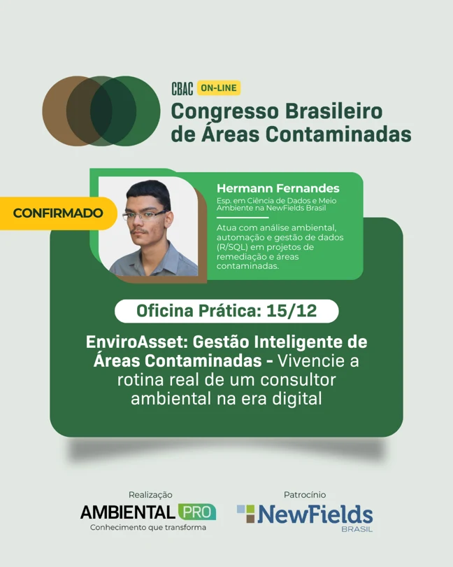
Especialista em Ciência de Dados e Meio Ambiente na NewFields Brasil.
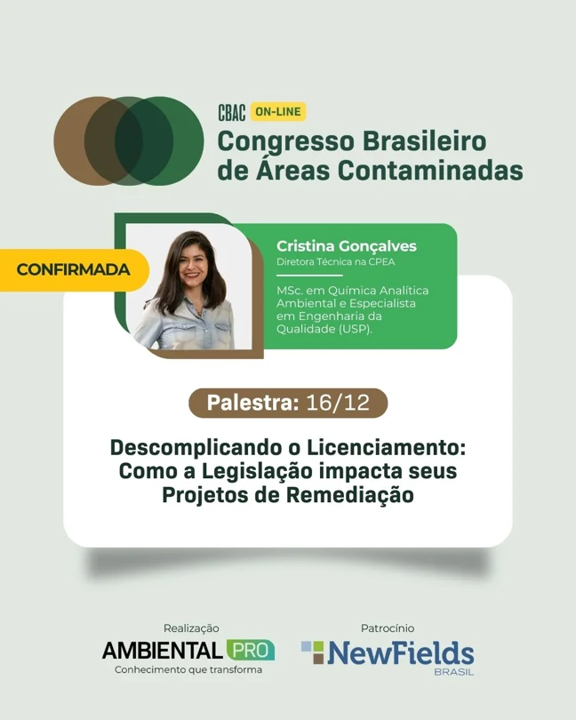
Diretora Técnica na CPEA. Mestre em Química Analítica Ambiental e especialista em Engenharia da Qualidade (USP).
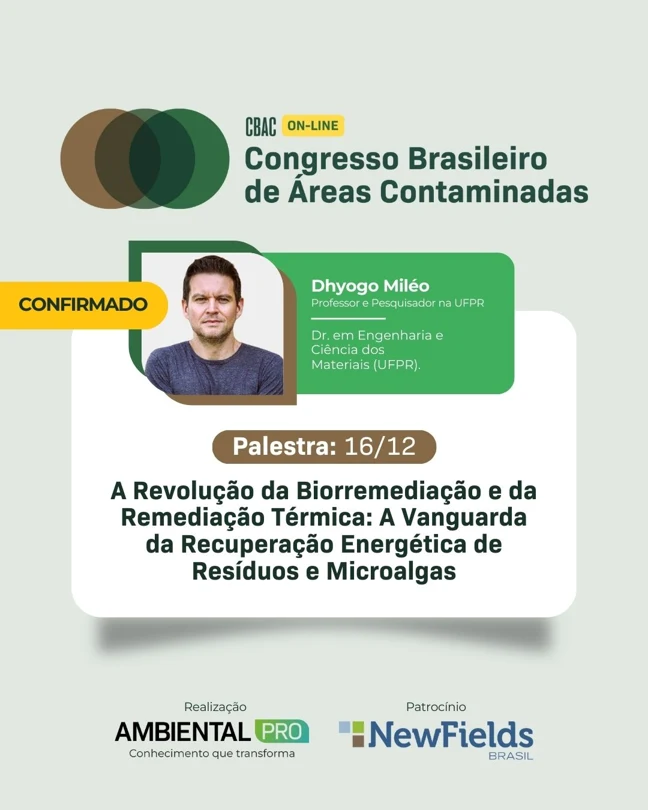
Professor e pesquisador na UFPR. Doutor em Engenharia e Ciência dos Materiais.
Consultor sênior na NewFields. Geólogo pela UFRGS e ex-coordenador regional da FEPAM.
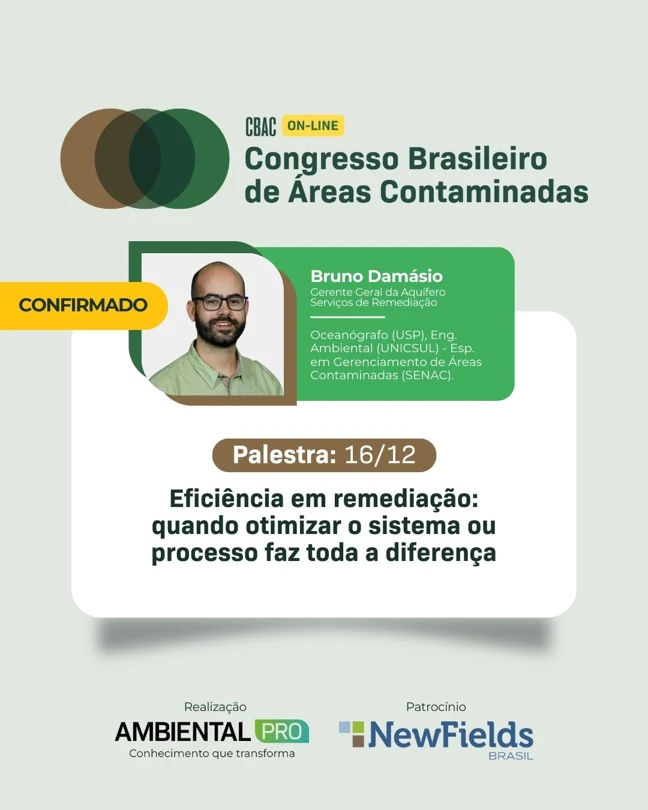
Gerente geral da Aquífero Serviços de Remediação. Oceanógrafo, engenheiro ambiental e especialista em gerenciamento de áreas contaminadas.
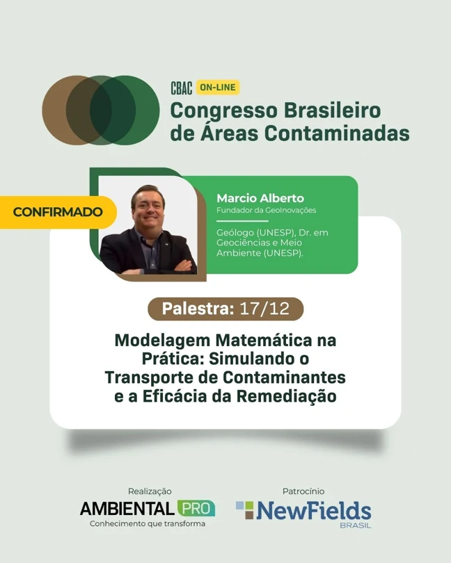
Fundador da GeoInovações. Geólogo e doutor em Geociências e Meio Ambiente pela UNESP.
System Design & Assembling Leader. Engenheiro industrial pela FEI e especialista em gerenciamento e remediação de áreas contaminadas.
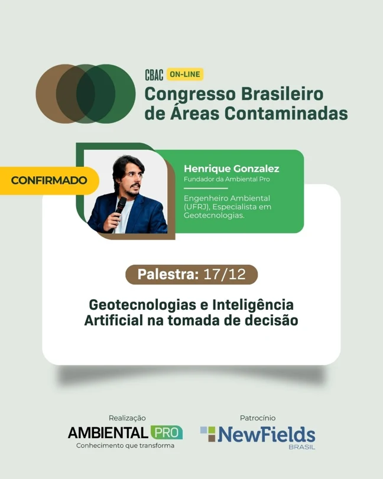
Fundador da Ambiental Pro. Engenheiro ambiental pela UFRJ e especialista em geotecnologias.
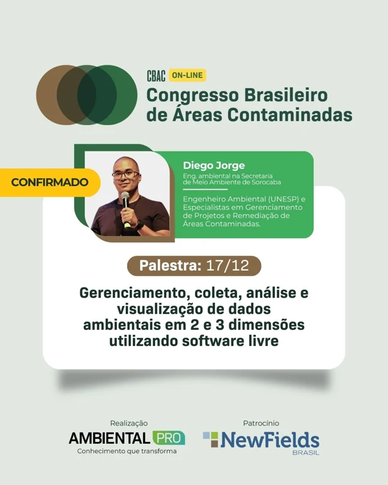
Engenheiro ambiental na Secretaria de Meio Ambiente de Sorocaba. Especialista em gerenciamento de projetos e remediação de áreas contaminadas.
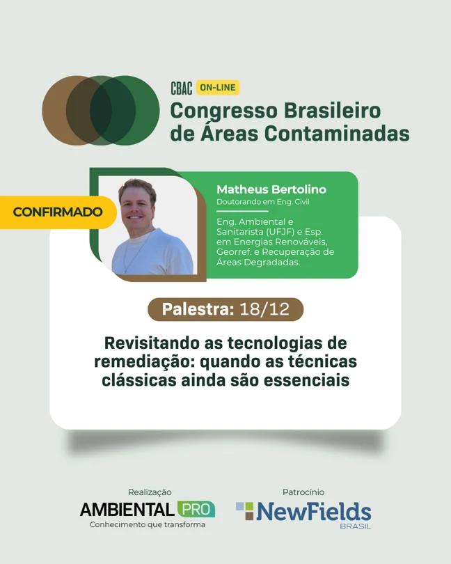
Doutorando em Engenharia Civil. Engenheiro ambiental e sanitarista pela UFJF.
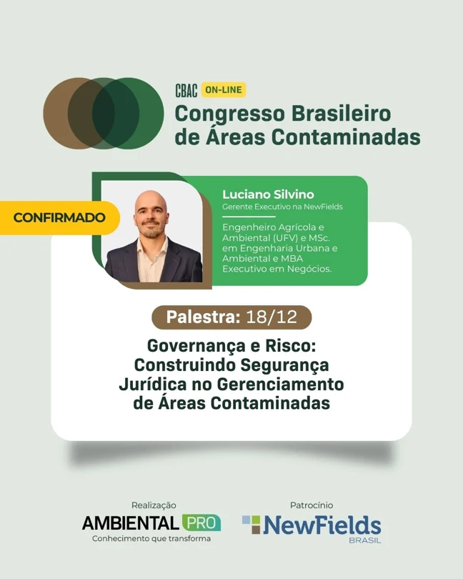
Gerente executivo na NewFields. Engenheiro agrícola e ambiental pela UFV e mestre em Engenharia Urbana e Ambiental.
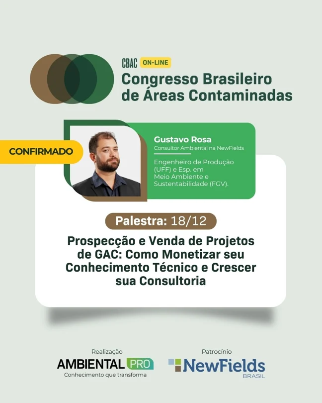
Consultor ambiental na NewFields. Engenheiro de produção pela UFF e especialista em Meio Ambiente e Sustentabilidade pela FGV.
Diretor técnico e comercial da Bezerra Ambiental. Engenheiro ambiental pela UFABC e especialista em Remediação Ambiental.
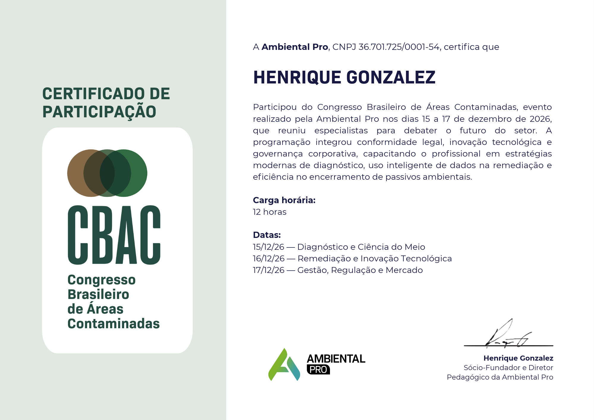
O certificado de participação do II CBAC registra as 12 horas de programação. Consulte a organização para saber os critérios de emissão.
Consultar informações do certificado →Depoimentos de participantes de outros congressos da Ambiental Pro.
.webp)
.webp)
.webp)
.webp)
.webp)
.webp)
.webp)
.webp)
A oficina está incluída no ingresso. Para participar, confirme sua presença no formulário de check-in.
Nos dias 15, 16 e 17 de dezembro, das 17h às 21h. Veja a programação por dia.
O II CBAC aborda o uso de inteligência artificial e dados para apoiar decisões na investigação, avaliação de risco e remediação de áreas contaminadas.
A oficina já está incluída no ingresso. Confirme sua participação no formulário de check-in.
O ingresso de R$ 197,00 inclui acesso à gravação. Ver ingressos disponíveis.
A organização orienta sobre os critérios de participação e a emissão do documento. O contato está na seção de certificado.